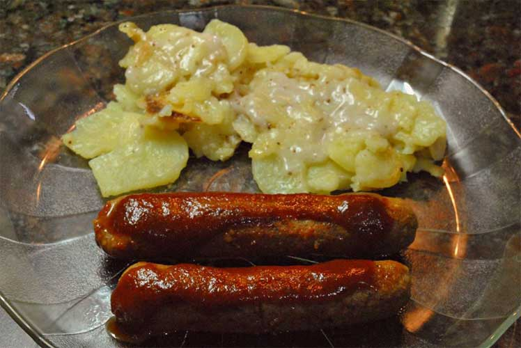
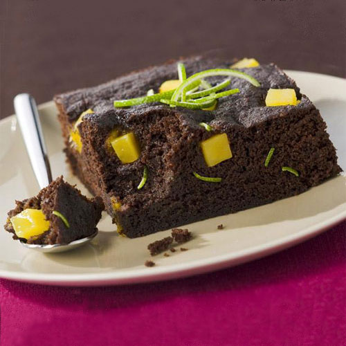
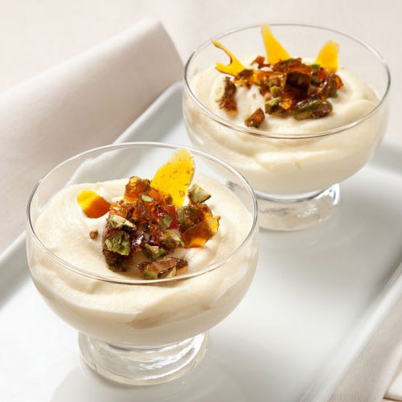
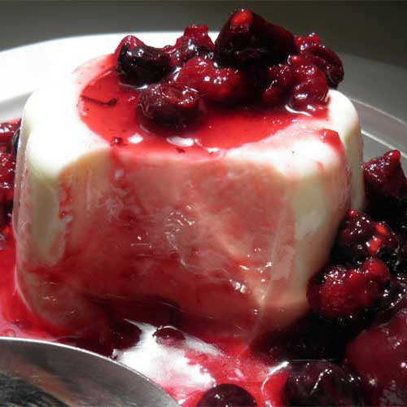
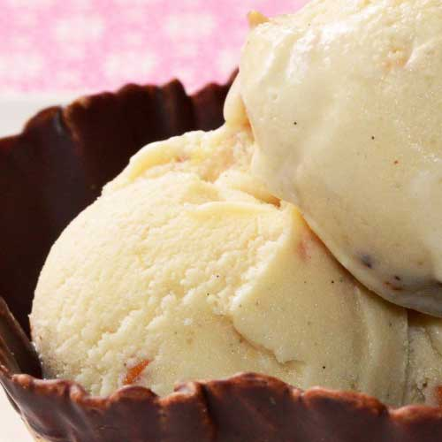
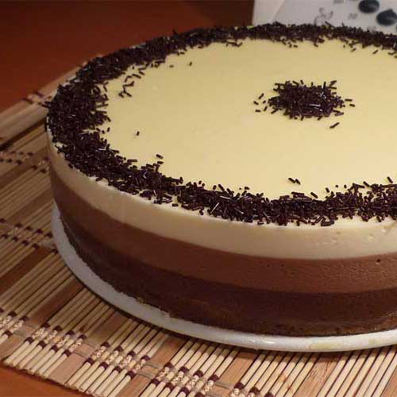
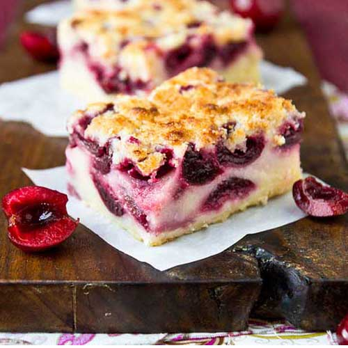
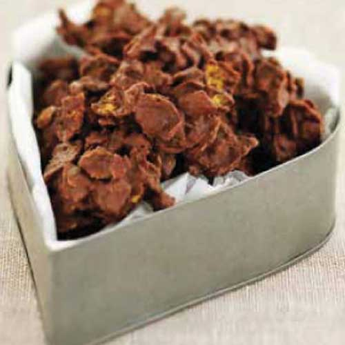
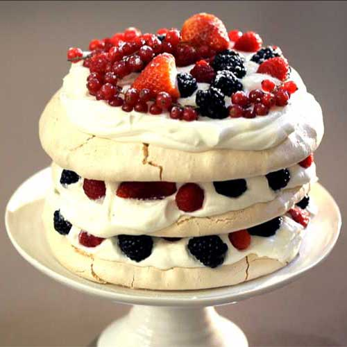
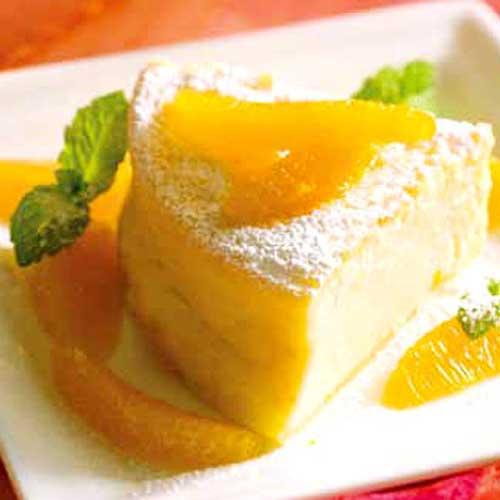

Top Recetas
Novedades
Salchichas de soja
Autor: Lucila Alba
Top 10 Recetas
Bizcocho de Chocolate con Mango y Lima
Autor: AnaMilhojas de peras al verdejo
 Autor: Gonzalo D´Ambrosio
Autor: Gonzalo D´AmbrosioIsla flotante al Chocolate y pistachos caramelizados
Autor: LauraPanna cotta clásica con coulis de frutos rojos
Autor: ReyesHelado de yogur y almendra
Autor: FilomenaTarta de tres chocolates
Autor: Nuria MarínPostre cremoso de cerezas
Autor: Eva ArguiñanoRosas del desierto
Autor: HogarutilTarta 'Pavlova'
Autor: Nicolás Serranotarta casera de queso y naranja
Autor: Marina